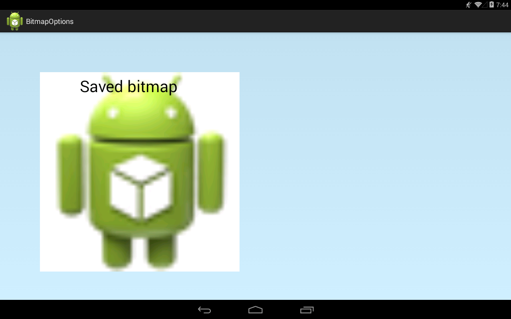
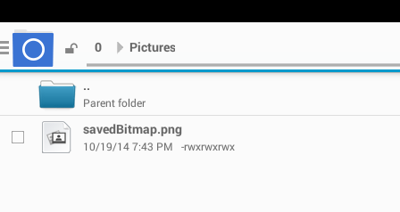

В этом уроке:
- разбираемся с BitmapFactory.Options
- сохраняем Bitmap в файл
На первом уроке про Bitmap мы обсудили, что для чтения картинки из файла (ресурсов,потока,…) в Bitmap используются decode* методы BitmapFactory. И при чтении мы можем использовать объект BitmapFactory.Options, который позволяет нам задать некоторые параметры. Какие-то из этих параметров весьма специфичны и крайне редко используются, но есть и те, которые могут быть полезны в повседневной работе.
Разберемся, зачем нужны эти параметры, и рассмотрим некоторые из них на примерах.
inJustDecodeBounds
Если включить (true) этот параметр, то система не будет создавать Bitmap, а только вернет информацию о изображение в следующих полях:
outWidth – ширина
outHeight – высота
outMimeType – mimetype
Создадим проект:
Project name: P1591_BitmapOptions
Build Target: Android 4.4
Application name: BitmapOptions
Package name: ru.startandroid.develop.p1591bitmapoptions
Create Activity: MainActivity
MainActivity.java:
package com.example.p1591_bitmapoptions;
import android.app.Activity;
import android.content.Context;
import android.graphics.Bitmap;
import android.graphics.BitmapFactory;
import android.graphics.Canvas;
import android.graphics.Paint;
import android.os.Bundle;
import android.util.Log;
import android.view.View;
public class MainActivity extends Activity {
@Override
protected void onCreate(Bundle savedInstanceState) {
super.onCreate(savedInstanceState);
setContentView(new DrawView(this));
}
class DrawView extends View {
Paint paint;
Bitmap bitmap;
public DrawView(Context context) {
super(context);
paint = new Paint(Paint.ANTI_ALIAS_FLAG);
BitmapFactory.Options options = new BitmapFactory.Options();
options.inJustDecodeBounds = true;
bitmap = BitmapFactory.decodeResource(getResources(), R.drawable.ic_launcher, options);
Log.d("log", String.format("bitmap = %s, width = %s, height = %s, mimetype = %s",
bitmap, options.outWidth, options.outHeight, options.outMimeType));
}
@Override
protected void onDraw(Canvas canvas) {
canvas.drawARGB(80, 102, 204, 255);
}
}
}В DrawView указываем inJustDecodeBounds = true, читаем стандартную Android-иконку и выводим в лог информацию о ней.
Запускаем, смотрим лог:
bitmap = null, width = 48, height = 48, mimetype = image/png
У вас ширина и высота могут быть другие, т.к. при чтении картинок из папок res/drawable-*dpi учитывается density устройства.
Bitmap равен null, т.к. система только вернула нам инфу, а Bitmap не создавала, а следовательно и память не занимала.
inSampleSize
Позволяет указать коэффициент уменьшения размера изображения при чтении. Он должен быть кратным 2. Если зададите другое число, то оно будет изменено на ближайшее число меньшее вашего и кратное 2.
Перепишем класс DrawView:
class DrawView extends View {
Paint paint;
Bitmap bitmap;
public DrawView(Context context) {
super(context);
paint = new Paint(Paint.ANTI_ALIAS_FLAG);
BitmapFactory.Options options = new BitmapFactory.Options();
options.inSampleSize = 2;
bitmap = BitmapFactory.decodeResource(getResources(), R.drawable.ic_launcher, options);
Log.d("log", String.format("width = %s, height = %s", bitmap.getWidth(), bitmap.getHeight()));
}
@Override
protected void onDraw(Canvas canvas) {
canvas.drawARGB(80, 102, 204, 255);
}
}Используем inSampleSize = 2 и в лог выводим размеры, получившегося Bitmap:
width = 24, height = 24
Как и заказывали, картинка при чтении в Bitmap стала в два раза меньше.
Параметры inJustDecodeBounds и inSampleSize можно использовать для чтения больших изображений. Т.е. если вы сразу решите считать большое изображение в Bitmap, вы можете занять, тем самым, слишком много памяти или вообще получить OutOfMemory. Поэтому следует сначала получить данные о размерах картинки, а затем с коэффициентом сжатия считать ее в Bitmap примерно нужного размера. Этот алгоритм мы еще подробно разберем на одном из следующих уроков.
inBitmap
Если передать в этот параметр Bitmap-объект, то он и будет использован для получения результата вместо создания нового Bitmap-объекта.
Тут есть несколько особенностей с версиями Android.
- в Android 4.4 (API 19) передаваемый Bitmap должен быть не меньше по размеру (в байтах), чем читаемое изображение.
- для более ранних версий, передаваемый в inBitmap объект должен быть того же размера (ширина/высота), что и читаемое изображение. Также, в Options необходимо добавлять inSampleSize = 1.
Перепишем DrawView:
class DrawView extends View {
Paint paint;
Bitmap bitmap;
public DrawView(Context context) {
super(context);
paint = new Paint(Paint.ANTI_ALIAS_FLAG);
Bitmap tempBitmap = Bitmap.createBitmap(300, 300, Bitmap.Config.ARGB_8888);
BitmapFactory.Options options = new BitmapFactory.Options();
options.inBitmap = tempBitmap;
bitmap = BitmapFactory.decodeResource(getResources(), R.drawable.ic_launcher, options);
Log.d("log", String.format("bitmap = %s (%s,%s), tempBitmap = %s",
bitmap, bitmap.getWidth(), bitmap.getHeight(), tempBitmap));
}
@Override
protected void onDraw(Canvas canvas) {
canvas.drawARGB(80, 102, 204, 255);
}
}Создаем новый Bitmap-объект tempBitmap и передаем его в inBitmap параметр.
Лог:
bitmap = android.graphics.Bitmap@5281a428 (48,48), tempBitmap = android.graphics.Bitmap@5281a428
Видно, что bitmap и tempBitmap указывают на один объект. Т.е. decode-метод не создавал новый Bitmap, а прочел изображение в tempBitmap и вернул его, как результат. Размер Bitmap стал 48х48. Хотя изначально мы создавали его размером 300х300.
Если систему что-то не устроит, она может вернуть null или сгенерировать IllegalArgumentException.
Еще раз проговорю, что этот пример сработал на Android 4.4, но на более ранних версиях есть нюансы, которые я чуть выше расписал.
inPreferredConfig
Указание желаемой конфигурации Bitmap.Config.
inDensity
Задает density-значение для Bitmap, аналогично методу setDensity. Для задания значения используйте константы DENSITY* класса DisplayMetrics.
inTargetDensity, inScaled
Если inTargetDensity отличен от inDensity, и inScaled = true (по умолчанию), то размер изображения будет скорректирован от inDensity к inTargetDensity.
inScreenDensity
К сожалению, мне не удалось понять, зачем он нужен. Если есть мысли, пишите на форуме.
inPurgeable
Позволяет системе временно удалить содержимое созданного Bitmap из памяти в случае нехватки таковой. Когда изображение снова понадобится (например при выводе на экран), оно будет восстановлено из источника. Т.е. жертвуем производительностью в пользу памяти.
inInputShareable
Если true, то Bitmap хранит ссылку на источник, иначе – данные источника. Но даже если true, то вполне может быть, что по усмотрению системы будут храниться данные, а не ссылка. Этот параметр актуален только при включенном inPurgeable.
inDither
Попытка сгладить цвета, если текущей цветовой палитры не достаточно для отображения оригинальных цветов изображения
inMutable
Если true, то мы получим mutable Bitmap
inPreferQualityOverSpeed
Включение более качественного декодирования в ущерб скорости
inPremultiplied
Доступен с API Level 19. Дает возможность выключить premultiplied-режим. Если режим включен (по умолчанию), то RGB компоненты в пикселах сразу рассчитаны с учетом альфа-компонента (для лучшей производительности). Канва принимает Bitmap только в таком режиме. В документацие сказано, что выключение режима может понадобиться для специфических задач: RenderScript и OpenGL.
inTempStorage
Здесь можем указать свой временный массив, который будет использован в процессе декодирования
mCancel
По этой метке можно определить был ли процесс декодирования отменен методом requestCancelDecode
Как сохранить Bitmap в файл
Метод compress позволяет сохранить Bitmap в разных форматах в исходящий поток. На вход принимает:
- формат (JPG, PNG, WEBP)
- качество сжатия, от 0 (наихудшее) до 100 (наилучшее)
- поток
Рассмотрим пример, в котором создадим Bitmap, нарисуем на нем что-нибудь и сохраним на SD.
Перепишем DrawView:
class DrawView extends View {
Paint paint;
Bitmap bitmap;
public DrawView(Context context) {
super(context);
paint = new Paint(Paint.ANTI_ALIAS_FLAG);
paint.setTextSize(40);
Bitmap bmpIcon = BitmapFactory.decodeResource(getResources(), R.drawable.ic_launcher);
bmpIcon = Bitmap.createScaledBitmap(bmpIcon, 500, 500, true);
bitmap = Bitmap.createBitmap(500, 500, Bitmap.Config.RGB_565);
Canvas canvas = new Canvas(bitmap);
canvas.drawColor(Color.WHITE);
canvas.drawBitmap(bmpIcon, 0,0, paint);
canvas.drawText("Saved bitmap", 100, 50, paint);
File file = new File(Environment.getExternalStoragePublicDirectory(Environment.DIRECTORY_PICTURES), "savedBitmap.png");
try {
FileOutputStream fos = null;
try {
fos = new FileOutputStream(file);
bitmap.compress(Bitmap.CompressFormat.JPEG, 100, fos);
} finally {
if (fos != null) fos.close();
}
} catch (Exception e) {
e.printStackTrace();
}
}
@Override
protected void onDraw(Canvas canvas) {
canvas.drawARGB(80, 102, 204, 255);
canvas.drawBitmap(bitmap, 100, 100, paint);
}
}В bmpIcon читаем стандартную иконку, затем меняем размер на 500х500. Создаем новый bitmap, заполняем его белым, рисуем в нем bmpIcon и пишем текст.
Далее создаем объект File, который указывает на файл savedBitmap.png в стандартной папке Pictures. Для этого файла создаем поток FileOutputStream, который передаем в метод compress. Также в методе указываем формат JPEG и качество = 100.
Запускаем приложение

После запуска приложения идем в папку Pictures, там должен быть файл savedBitmap.png.

Открываем его